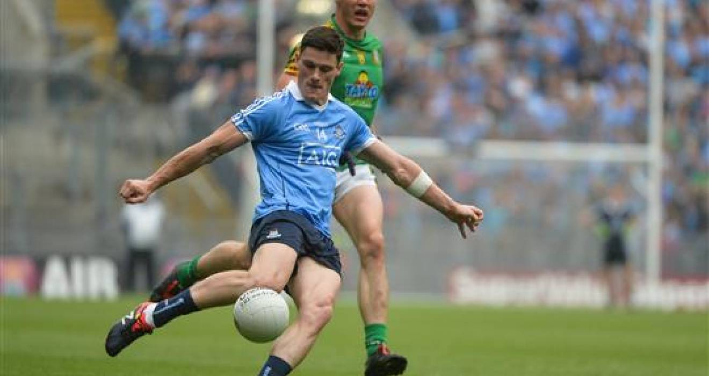
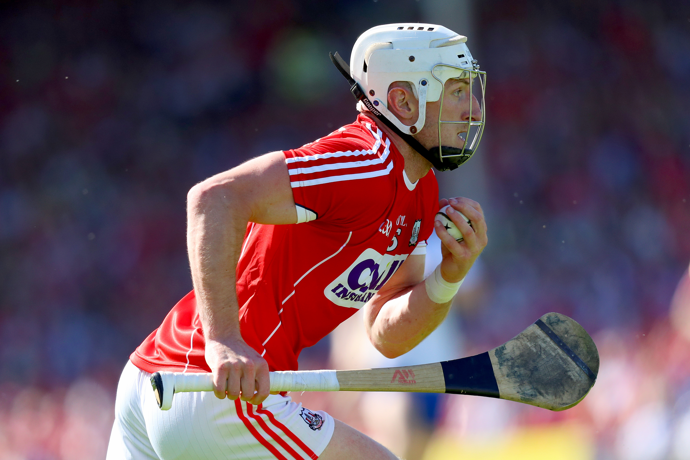

Hurling and Football
I play both hurling and football for Ballincollig GAA club. I have played both these sports from a very young age.
(ever since I was able to walk). The team i admire the most is the famed Kilkenny hurlers of the mid to late 2000's.
Watching players such as Tommy Walsh, JJ Delaney and Henry Shefflin, truly inspired me to carry on playing the sport I love.
There are so many benefits to playing sport. Whether thats competing at a high level and trying to improve yourself as an athlete, to enjoying the social aspect, it is quite revealling what a telling impact sport
plays in our day to day life. That is why i believe that everyone should play a part in any type of sport or club.